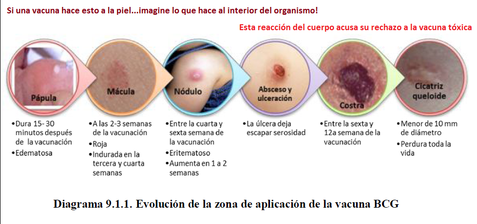
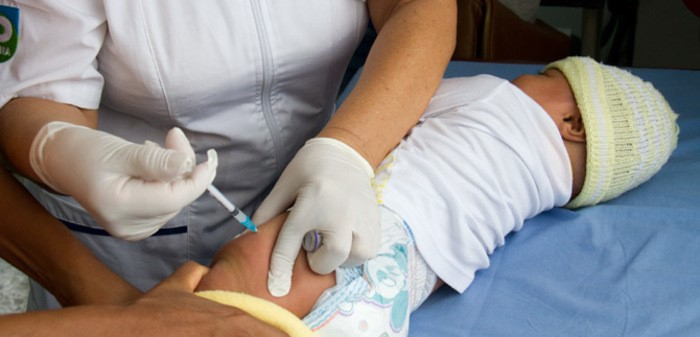

PREVENCIÓN Y CONTROL DE ENFERMEDADES
Las vacunas son sustancias que contienen virus o bacterias atenuados, muertos o fragmentos que al introducirse en el cuerpo de su hijo estimulan su sistema de inmunidad para generar defensas (anticuerpos) que lo protegen contra algunas enfermedades graves.
Vacuna BCG
Previene la tuberculosis meníngea (infección del cerebro) y muerte. Es una dosis inyectada en el brazo derecho. La reacción de la vacuna provoca en la piel una roncha que con los días forma pus, costra y deja una pequeña cicatriz. No aplique nada, sólo lave con agua y jabón. Es importante conocer que la luz solar al caer directamente en frasco deteriora la vacuna en cinco minutos y si cae en forma indirecta destruye el 50% de los basilos en 15 minutos, una vez reconstituida la vacuna, pierde la viabilidad después de 8 horas si se conserva en un ambiente frio y aséptico, por ello la inmunización debe realizarse sin retraso desechando el sobrante. Esta vacuna está indicada en recién nacidos con peso mayor o igual de 2500 gramos y sin ninguna enfermedad que comprometa su estado de salud.
La vacuna BCG no debe administrarse a niños que presentan:
- Inmunidad comprometida, SIDA, leucemia, linfoma o malignidad generalizada.
- espuesta inmunológica alterada por esteroides, antimetabolitos o radiación.
- Niños menores de 6 horas nacido y de bajo peso al nacer (menor de 2500 gramos).

Vacuna anti-hepatitis B
La vacuna contra la hepatitis B deberá ser administrada tan pronto como sea posible luego del nacimiento
(preferiblemente en las primeras 12 horas), es llamada dosis del recién nacido. Se continúa luego con
la primera dosis a partir del segundo mes de vida, la segunda dosis a partir del cuarto mes de vida
y la tercera dosis a partir del sexto mes de vida. El total de dosis aplicadas a un lactante es de cuatro.
En recién nacidos pre término y con un peso inferior a 2.000 gramos, se debe esperar hasta alcanzar 2.000
o más gramos de peso para recibir la dosis correspondiente, en caso de ser frutos de madres con HBsAg negativos.
Protege contra la hepatitis B. Esta infección se trasmite por las mamás infectadas a los hijos sin saberlo,
por lo que se la debe aplicar para evitar
que su hijo enferme.
- La vacuna se aplica mediante inyección (0.5 ml), en el muslo izquierdo en los menores de 18 meses de edad.
- La vacuna contra la hepatitis B se aplica en los menores de 5 años de edad, el esquema consiste de 3 dosis, la primera dosis se aplica de preferencia el día de su nacimiento (en caso extremo dentro de los primeros 7 días de vida) la segunda dosis a los 2 meses y la tercera a los 6 meses de edad.
- En caso de que por otras razones no sean vacunados dentro de los primeros 7 días de nacidos, la vacuna se aplica a los 2, 4 y 6 meses de edad. O 4, 6 y 15 meses de edad.
- Son necesarias las 3 inyecciones para estar completamente protegido.
